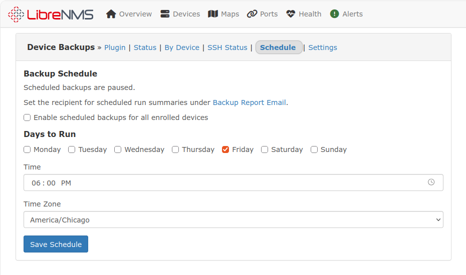

Install in LibreNMS
Run these commands from the LibreNMS installation directory as the LibreNMS service user. The plugin requires PHP 8.4 or later and a separate MySQL or MariaDB database.
./lnms plugin:add daryl-peterson/librenms-device-backups dev-main
./lnms plugin:enable device-backupsRun and review backups
- Enroll devices from your LibreNMS inventory and test their SSH settings.
- Run backups on demand or on a schedule and see which devices succeeded or failed.
- Download verified AES-256 ZIP archives from the device’s backup history.
- Check supported profiles for network platforms and DNS or DHCP servers.
